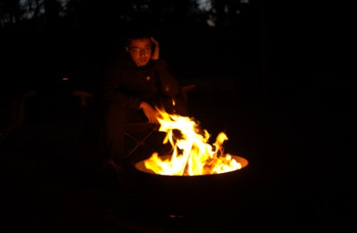

Task 1: In this picture, I am holding a cable car pass, making the background move like I am going uphill.
Make sure the objects in the picture are not distorted during the process.
Original Picture
After I write words and instructions in AdobeFirefly, it shows a five seconds video
Task 2: The guy in the picture was thinking deeply and was touching his hair.
Original Picture

After I write words and instructions in AdobeFirefly, it shows a five seconds video